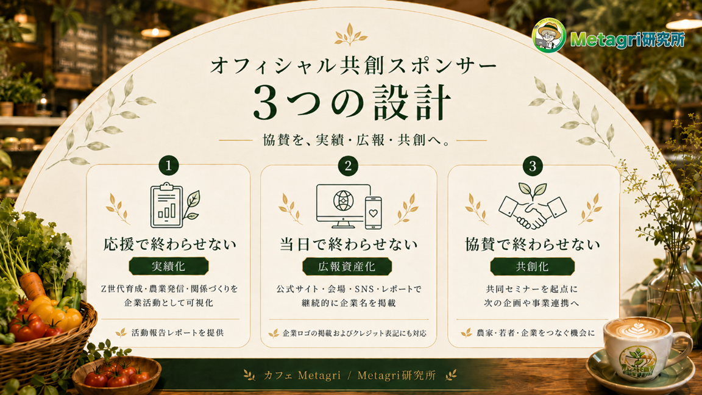

食べる
スープやドリンクを通じて、農家の食材と季節の味に出会う。

大切なお知らせ
2026年9月27日に予定していた1DAYカフェは延期します。新しい企画オーナー、飲食運営体制、会場、安全条件、スポンサーへの提供内容が確定してから募集を再開します。
現時点で法人スポンサーのお申込み・商談はありません。再開時は募集条件と期限を改めて掲載します。
掲載日: 2026年8月4日
カフェMetagriとは
農業とテクノロジーのコミュニティ「Metagri研究所」から生まれた小規模ポップアップ構想です。2026年9月27日の開催予定は延期し、経験者を含む新しい責任体制のもとで再設計します。
スープやドリンクを通じて、農家の食材と季節の味に出会う。
POP、QRコード、カフェでの会話を通じて、作り手の背景と食材のストーリーを知る。
商品購入、SNSフォロー、感想投稿など、継続的な関わりへつなげる。
カフェMetagriを一度限りのイベントではなく、農家・若者・生活者・企業が継続的に関われる共創モデルへ育てるためです。協賛を企業名の掲出だけで終わらせず、若者育成、農家の情報発信、生活者との接点づくりを支える企業活動として可視化します。
協賛金は「応援して終わり」にしません。企画前から実施後まで、農家・若者・生活者・企業が継続的に関われる価値として残すために、3つの設計を用意しています。

本企画への参画を、〈Z世代の実践教育〉〈農家の情報発信〉〈生産者と生活者の関係づくり〉を支えた企業活動として可視化します。実施後には、企画の成果・参加者の反応・インターン生の学びをまとめた活動報告レポートを制作。
スポンサー企業の支援理由や本企画への期待も掲載し、自社サイト・社内報・サステナビリティ報告などにご活用いただける形で提供予定です。
企業名・ロゴは、カフェMetagri公式サイト、当日の会場掲示・POP、SNS発信、活動報告レポートなど、企画前から実施後まで複数の接点で掲載します。
活動報告資料には「Supported by ○○」としてクレジットを記載。音声配信「Metagri Voices」等でも、スポンサー企業の取り組みや支援の背景をご紹介します。
累計40回以上実施してきたMetagri研究所との共同セミナー開催機会を提供します。テーマは企業の事業領域や課題に応じて個別に設計します。
今回の協賛を起点に、情報発信にとどまらず、農家との連携・若者との共同企画・新規事業や地域プロジェクトの検討へとつなげていきます。
再募集時には、延期後の企画・体制・開催日に合わせて内容を見直します。以下は現行条件での募集ではありません。
| 提供内容 | 内容の補足 |
|---|---|
| 公式サイト・当日POP・会場掲示・活動報告レポートへ企業名/ロゴ掲載 | 準備期間から当日、実施後まで、企画全体を支えるオフィシャル共創スポンサーとして掲載します。 |
| 活動報告資料への「Supported by ○○」クレジット | 制作物の内容や掲載面に合わせて、自然な形で協賛クレジットを入れます。 |
| Metagri研究所とのオンライン共同セミナー開催権（1回） | 食・農・地域・テクノロジーなど、企業の関心領域に合わせてテーマを調整します。 |
| 活動報告レポートでの企業紹介（支援理由・取り組み・接点） | 支援の背景や取り組みを、企画の文脈に沿って紹介します。 |
| Metagri Voices等 音声配信での紹介 | 企画進行や活動報告の中で、オフィシャル共創スポンサーとして紹介します。 |
| SNS・Discordでの協賛紹介 | Metagri研究所のコミュニティ内外に向けて、協賛決定や活動進捗を共有します。 |
| 当日会場での紹介（POP・受付付近等） | 来場者の体験を妨げない範囲で、会場内の導線や掲示に反映します。 |
| 企業サイト/採用/商品ページへのQR導線設置 | 希望がある場合は、企画趣旨や会場導線に合わせて個別に相談します。 |
| 実施後オンライン報告会での紹介 | 実施結果、学び、今後の展開を共有する場でオフィシャル共創スポンサーとして紹介します。 |
以下は過去の募集条件を確認するための記録です。現在のお申込みには適用されません。
| 名称 | カフェMetagri オフィシャル共創スポンサー |
|---|---|
| 募集枠 | 1社限定 |
| 協賛金額 | 100,000円（税抜）消費税10%を加算し、税込110,000円となります。 |
| 対象 | 食品・飲料・小売・流通、農業・アグリテック・AI関連、人材・教育・大学・研修、地域金融・鉄道・不動産・自治体関連など、食と農・地域・若者育成に関心のある企業・団体 |
| 開催日 | 2026年9月27日（日）の予定を延期新しい開催日は体制確定後に決定します。 |
|---|---|
| 開催場所 | 未定延期後の企画に合わせて再選定します。 |
| 募集期間 | 2026年8月4日に新規受付を停止当初の募集期限より前に受付を終了しました。 |
| 提供期間 | 契約成立後〜2026年10月末予定公式サイト掲載・共同セミナー・報告会を順次実施します。 |
| 選定方法 | 申込後に個別オンラインミーティングを実施し、本企画との親和性や共創の可能性を確認したうえで決定します。応募が複数あった場合は、親和性や共創の可能性を踏まえて選定します。 |
書類・インボイス対応
本ページに記載の協賛金額（100,000円）は税抜表示です。ご請求時に消費税10%を加算し、税込110,000円となります。
請求書・領収書・見積書等、社内処理に必要な書類発行は可能な範囲で対応します。弊社（株式会社農情人）はインボイス制度の適格請求書発行事業者です。
税務上の処理や経費区分は、各社の経理・税務担当にご確認ください。
企画・運営体制と開催日が確定した後、提供内容と募集条件を見直して再開します。
再開条件は、企画責任者・飲食責任者・進行責任者の確定、会場と食品衛生条件の確認、提供内容と期限の確定です。
「3つの設計」の中身から、協賛金額・税の扱い、共同セミナー、開催規模、掲載権利まで、検討時に出やすい論点を整理しています。
協賛を「応援して終わり・当日で終わり・協賛で終わり」にしないための設計です。実施後の活動報告レポート、企画前〜実施後の複数接点での掲載、Metagri研究所との共同セミナーの3本柱で、継続的な価値提供を目指します。
記載の100,000円は税抜で、ご請求時に消費税10%を加算し税込110,000円となります。弊社（株式会社農情人）は適格請求書発行事業者です。決済はこのページでは行わず、条件確認後に運営から支払い方法をご案内します。
累計40回以上の実績をもとに、共同セミナーを1回ご提供します。「Z世代と考えるこれからの食農コミュニケーション」「農家のストーリーを企業ブランドに生かす方法」「農業・地域分野におけるAI活用」など、事業領域や課題に応じて個別に設計します。
企画の成果・参加者の反応・インターン生の学びに加え、スポンサー企業の支援理由や期待も掲載してお渡しします。自社サイト・社内報・サステナビリティ報告などにご活用いただける形で提供予定です。
広告枠を多数販売するのではなく、オフィシャル共創スポンサーとして企画の文脈に深く関わる設計にするためです。掲載・レポート・共同セミナーの質を保つ目的もあります。
会場・安全管理・運営判断により内容が一部変更となる可能性があります。その場合は変更理由、代替の露出、レポート内容を個別にご説明します。
掲載範囲・掲載期間・使用素材は成約後に確認します。公序良俗や本企画の趣旨に合わない内容は、掲載方法を調整させていただく場合があります。
現在は募集を停止しており、延期後の開催日と提供内容は未定です。再募集時には、現地参加の要否を含めて条件を改めてご案内します。
個人向けは支援プランとリターンが中心です。オフィシャル共創スポンサーは、法人の目的に合わせた「3つの設計」（活動報告レポート・継続的な露出・共同セミナー）まで含めて調整します。
新しい責任体制・開催日・提供内容・募集条件が決まり次第、このページでお知らせします。